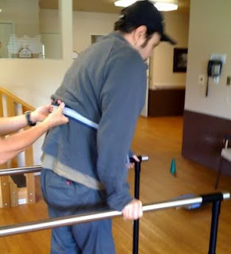

(Minor clarification below)
“I always thought police were nothing but good and were
there to protect people,” testifies Elizabeth Polak, a registered nurse from
Phoenix. Her view of the State’s enforcement caste changed dramatically as a
result of what she witnessed in Denver on the evening of March 25, 2008.
Polak, returning to her apartment following her daily jog,
saw a man and a woman having an unremarkable conversation near the entrance to
the building. Two police officers
appeared – a development always pregnant with trouble – and approached the
couple. From a distance of about 100 feet, Polak saw the officers stride purposefully
toward the man, who was later identified as James Moore.
“The officers did not stop and have a conversation with Mr.
Moore,” she later recounted in a sworn affidavit. “The officers walked up to
him and instantaneously punched Mr. Moore. Prior to being punched, there was no
resistance or non-cooperation on his part. Mr. Moore was not given the chance
to comply with any orders, if any were given. It appeared that the police were
on a mission to walk up to Mr. Moore and punch him.”
Shocked and terrified by the assault on Moore, the woman –
his girlfriend, Julie Gomez – repeatedly exclaimed: “You have the wrong people!”
Moore, who had been knocked to the ground, did what he could to avoid or
deflect the blows directed at him by the assailants.

The attack on Moore “appeared to be completely unprovoked
and at no time was Mr. Moore fighting back,” Polak – who has never spoken with
the victim – related in her affidavit. “At no time did Mr. Moore try to attack an
officer. At no time did Mr. Moore try to reach for an officer’s weapon. Mr.
Moore was surprisingly calm.”
“I did try to stay calm,” Moore, a Special Forces combat
veteran, recalled to Pro Libertate. “I
just tried to assure myself that the beating would eventually stop, and I just
had to endure it patiently. But it didn’t stop.”
The assailants, Officers Shawn Miller and John Robledo of
the Denver Police Department, had been summoned to the apartment building by a
noise complaint from a neighbor after Moore – who has been diagnosed with
Post-Traumatic Stress Disorder – had a somewhat tumultuous breakdown upon
learning of a friend’s death in Afghanistan. (Moore, who was a Ron Paul
delegate in 2008, has become an unabashed opponent of the Empire.) After deciding
a change of scenery was in order, Moore and his girlfriend called a cab and
went outside to wait. An hour later, the cops arrived.
“We were waiting outside the building, when I suddenly hear pounding and rushing footsteps -- then next thing you
know Miller is in my face shouting, `Get your hands out of your pockets! Show
me some ID!’” Moore told Pro Libertate.
“I said, `Why. what's going on' -- and I was almost simultaneously knocked to the ground before I could finish." Once the beating began, Moore tried to identify himself and point out he was a disabled Vet -- but this availed him nothing.
Moore hit the ground hard – and went very still. Moore
recalled that there was a sudden, brief pause in the assault after blood gushed
from his face onto the sidewalk.
“It seems to me that they knew at that point they’d screwed
up,” he said. “It was as if, after a second or two, they decided to make it
look as if I had been resisting arrest – which meant that they had to use a
great deal of `necessary force’ to subdue me.” Robledo immediately hog-tied Moore, binding his wrists and ankles in a restraint device -- while Miller continued the assault. When Miller’s hands grew weary
and his knuckles became sore, he extracted a small club and began hitting
the victim in the neck and head.
“I stood in terror watching the beating for about 7-10
minutes,” Polak attested. The attack lasted long enough for the young woman to
enter her apartment and get to a window.
During that time, the assailants -- seeking to sustain the fiction that they were subduing a
dangerous, resisting criminal -- called for "backup." A thugscrum of about ten officers quickly
congealed at the scene. As many as a half-dozen of them helping to restrain the
unresisting Moore, who was already hog-tied and remained conscious for roughly half of the amount of time described by Polak.
"Every time I tried to say something, they raised my leg higher into the air behind my back, causing my diaphragm to push into my lungs to shut off my air supply," Moore pointed out. "I could not breathe out, much less breathe in." Even though he was helpless, hog-tied, face-down on the concrete, and suffocating, the police continued to beat him unstintingly while chanting the preferred refrain of the rapist: "Stop resisting! Stop resisting!"
"Every time I tried to say something, they raised my leg higher into the air behind my back, causing my diaphragm to push into my lungs to shut off my air supply," Moore pointed out. "I could not breathe out, much less breathe in." Even though he was helpless, hog-tied, face-down on the concrete, and suffocating, the police continued to beat him unstintingly while chanting the preferred refrain of the rapist: "Stop resisting! Stop resisting!"

“From the windows inside the complex, I saw Mr. Moore lying
lifeless in his own blood,” Polak narrates. “Officers were still on top of him
striking him with their fists. He was not moving and did not look like he was
breathing. His face looked caved in.”
Eventually one of the officers – obviously the brightest of
a very dim lot – noticed that
Moore appeared to be dead, and began to
administer CPR. An ambulance pulled up shortly thereafter and Moore’s
apparently lifeless body was taken to the hospital.
At one point, that body was
literally lifeless, in a clinical sense: Moore “flatlined”
on the sidewalk and had to be medically revived by the EMTs. Polak, looking
at Moore from a distance with the eyes of an RN, couldn’t tell if the victim
had survived: “I called my mom and asked if she would call the police to
inquire whether Mr. Moore was alive or dead.”
It’s doubtful that Denver’s, ahem, Finest would have cared much about the fate of a mere Mundane like
James Moore. The officer who led the unprovoked assault certainly wasn’t troubled
by what he had just done.
“After the ambulance left, a fireman used a fire hose to
wash the blood off the sidewalk,” Polak notes. I also noticed that the same
officer that was beating him with the club was wiping Mr. Moore’s blood off of
his club.”
| Swaggering coward Shawn Miller bullies a small, disabled woman. |

That officer’s name, once again, is Shawn Miller. Two days
before he committed what was very nearly an act of aggravated homicide against
James Moore,he and his partner severely beat a pedestrian named Jason Graber, leaving him with a broken knee and a permanent disability.
Concerned that Miller’s reckless driving was putting pedestrians at
risk, Graber gestured for the officer to slow down. This constituted the
unforgivable offense called “contempt of cop” – and Graber was brutalized as
an act of “street justice.”
In a November 2010 incident in a secure apartment building,
Miller cursed at, browbeat, threatened, battered, and abducted a disabled woman
named Doreen Salazar because of her perceived tardiness in buzzing him and his
partner into the residential area. Salazar, who had been advised by the apartment managers never to grant
access to anyone she didn’t know, and who had difficulty identifying the
officers as police, paused for perhaps a second or two before letting them in.
It’s a tragedy that she didn’t understand that police are the most dangerous variety of strangers she's likely to confront.
Security camera video shows Miller snarling at the small,
middle-aged woman, pushing her, and cornering her near an elevator. He then
slammed her face-first into the elevator door, handcuffed her, and held her in
his patrol car for about ten minutes – a sadistic act that served no purpose
other than to terrorize an uppity Mundane who had failed to respect Miller’s
supposed authority.
“Did you learn your lesson?” a smirking Miller sneered at
Salazar after releasing her from the handcuffs.
“Yes, I learned my lesson,” Salazar – who is more of a man than
little Shawn will ever be -- replied. “I learned not to open a door for a cop
ever again.”
While that is a sound and commendable policy, it’s inadequate
to deal with the threat posed by police officers to those citizens – like James Moore
– who actually venture outside their homes on occasion.
Moore underwent a lengthy and expensive hospitalization that
included back surgery. While recuperating from the nearly fatal beating, Moore
had to deal with the expense, frustration, and stress resulting from the
spurious charges filed against him by the thugs who had beaten him. In
keeping with standard procedure in such matters, the victim of this
unprovoked, and nearly fatal, attack was charged with Felony Assault on a
Police Officer and Felony Disarming of a Police Officer. It took two years for
the charges to be dismissed.
 |
| Moore in rehab following back surgery. |

In March 2010, Moore filed a federal lawsuit against Miller,
Robledo, and Denver’s municipal government. During depositions last December,
Miller and his boyfriends continued to peddle the fiction that they had subdued
a violent, dangerous suspect.
“They’re trying to make me look like Rambo – an unhinged Special
Forces veteran who is a danger to the public,” comments Moore. “Yes, I did
serve in a Special Forces unit that saw combat in Afghanistan, but I was a
computer nerd. I was never part of an assault team.”
After returning to the United States in 2004, Moore suffered
from combat-related psychological problems -- including post-traumatic stress disorder. In 2006, he sought help from the VA, and was turned down. Shortly thereafter, he attempted suicide.
By 2008, however, “I was healthy again, and looking forward to
live. Julie and I planned to make a life together, but that ended the night
that the cops attacked me.” Julie, whose only involvement in the March 25, 2008 incident was to be a witness to the Denver PD's gang assault on her boyfriend, was abducted by the police and slapped with several entirely contrived charges, including assault on an officer, resisting arrest, and "obstruction." While in jail following her arrest, Julie was told that the police would have the couple evicted from their apartment -- and they made good on the threat.
Julie spent the next two years fighting the fraudulent and vindictive charges against her. Although James and Julie are still on cordial terms, the accumulated trauma of the evening and her subsequent incarceration ended the relationship.
Julie spent the next two years fighting the fraudulent and vindictive charges against her. Although James and Julie are still on cordial terms, the accumulated trauma of the evening and her subsequent incarceration ended the relationship.
“In his testimony, Miller said that `This was the worst
fight I’ve ever been in. This guy must have been trained in martial arts,’”
Moore reflects. “He also said that I was a threat because he couldn’t see my
hands and I was wearing a hoodie. Neither of those statements is true. I never had my hands in my pockets, and I was actually wearing a
North Face jacket, not the notorious hoodie.”
Between his medical bills and his legal expenses, Moore –
who pulled in a salary north of $100,000 working in Silicon Valley before going
to war – is destitute, living with his father in Oklahoma. He was able to
gather sufficient funding to travel to southeast Asia in search of alternative
therapies for his back injuries – treatment that cost a great deal less than
conventional methods in the U.S. While the prospect of relocating to Asia was
attractive, Moore points out, “I had to come back here and take care of
business in court.”
Last September, the Denver City Council approved a $225,000 taxpayer settlement with Jason Graber. U.S. District Judge John Kane, who had dismissed Graber’s lawsuit last March, reversed his decision a few months later after it was demonstrated that the Denver PD and the municipal government had refused to turn over documents dealing with excessive force complaints – many of them filed against Shawn Miller, who remains on duty and has never faced disciplinary action of any kind.

Apparently the public is expected to confide in the Chief’s uncorroborated assurances, because he is determined to preserve the institutional opacity of his department.
Last fall, Judge Kane issued an order demanding
that the police department turn over all documents dealing with excessive force
complaints over the previous eight years, including disciplinary records.
Despite fines of $5,000 a day, and Kane’s threat to dispatch U.S. Marshals to
collect the files, the Denver PD and the ruling clique it serves have refused
to comply. [Clarification: The department, while not in full compliance with the order, has turned over a small fraction of the documents it is required to provide.]
“The people behind this are simply trying to wear me down,”
Moore observes. “They want to outlast me, and they have taxpayer money at their
disposal, while I have next to nothing. They probably assume that I’ll get
desperate and they’ll be able to settle for pennies on the dollar. I, on the
other hand, am determined to be the guy who doesn’t cash out – the one who
holds out for real accountability, which means the exposure of all the corrupt
and criminal things this department has done to innocent people.”
“You know, before this happened I trusted the police,” Moore
concludes in an ironic echo of the witness who saw him beaten and left for dead
on the sidewalk. His experience is just one illustration – albeit an uncommonly
infuriating one – of the fact that no informed and rational person should ever
make that mistake.
My sincere thanks, once again...
... for every generous donation made to keep Pro Libertate up and running. The books should start arriving by the end of this week. Once again: Everyone who donates $20 or more will receive a personalized copy of Liberty In Eclipse.
Your help is urgently needed, and deeply appreciated. Thank you!
VERY IMPORTANT: To avoid any possible confusion, please understand that that I am not soliciting donations for James Moore's legal case against the Denver PD.
Those interested in following James's legal struggles should check out the new Facebook page "Justice for Jimmy," which will be regularly updated with information about his case and similar outrages.
VERY IMPORTANT: To avoid any possible confusion, please understand that that I am not soliciting donations for James Moore's legal case against the Denver PD.
Those interested in following James's legal struggles should check out the new Facebook page "Justice for Jimmy," which will be regularly updated with information about his case and similar outrages.

Please be sure to check out Republic magazine -- which is updated daily.
60 comments:
Thank you m Grigg for once again opening eyes.
Sounds like Denver is giving Seattle a run for their money in the bad lieutenant race. Read a story the other day about a guy being arrested and charged with a felony for pointing his index finger at a cop. For being such rough and tough thugs of the state sanctioned gang they certainly are thin skinned. If you give a cop a dirty look is that grounds for a felony arrest, whoops better not give them any ideas.
Once again, Shawn Miller and his fellow thugscum need to be held personally liable for the torts they commit. There is no reason whatsoever that the already well-soaked taxpayers of Denver should be on the hook for crimes committed by Miller and his fellow feral animals, crimes that by no remote stretch of the imagination could even remotely be considered "in the line of duty."
True, Mr. Moore won't get as much compensation from poor porky (although harvesting the swine's vital organs might bring in a rather tidy sum), but it's likely that denuding Miller of all of his earthly property will seriously deter to him and his fellow porcine predators from ever again indulging in gratuitous violence against the citizenry.
Meanwhile, I eagerly anticipate reading a story at some point in the future about the mutilated remains of former, disgraced Denver "police officer" Shawn Miller being found in a garbage dump somewhere.
I am tired of these stories - bad cops, bad prosecutors, bad judges, bad politicians, bad lobbyists for bad corporations, all supplicants at the court of our imperial lords and masters. How long before people wake up to the fact that we live in a police state, that America has lost its' way, that by not standing up to these thugs we have brought this upon ourselves.
Should I be heartened by the fact that these people are no longer allowed to hide in the dark, that they must face the light? Or disheartened by the fact that this is just the tip of the iceberg?
It's not just the cops - we elected Obama because he promised to stop the senseless foreign interventions, close Gitmo, repeal the worst of the horrific Patriot Act, stop the widespread invasions of privacy granted the TSA and the NSA and the DHS. Instead, he has doubled down on the violence and brutality and contempt for human rights and civil liberties.
How an we expect anything but thuggish behavior when so much of the government practices it and gets away with it?
I am tired.
This is what is happening now in Barack Hitler's Amerika (or is it Barack Mugabe?).
Another solid post, Will.
I AM HAWAI'IAN ...WE HAVE MANY INCIDENTS IN HONOLULU AND MAUI COUNTIES IN THIS REGARD ...
HAWAI'IAN POPULATION IS ABOUT 3% OF
TOTAL
PRISON POPLULATION OF WOMEN EQUAL 85 % HAWAI'IAN
PRISON POPULATION OF MEN EQUAL ABOUT 40% HAWAI'IAN
DO YOU SEE THE DISCREPANCIES ???
ALAN D. ACKERMAN
adack111@gmail.com
I submit that all "policing" agencies and their agents have mandatory insurance policies paid for by the departments, unions, and individual cops to pay for these liabilities and not the city itself. These departments would they be rated no differently than Moody's does for any other corporation. Only when the rat bastards themselves are held financially accountable for their misdeeds will they either clean their own nest or find nobody will insure then and they'll then be required to resign or the department closes shop. Where is the downside in that?
They are brutalizing citizens everywhere, and in Topeka KS too. People are shocked at the killings. I post links and references to Pro Libertate all over so that people will know we are not alone, and it's time to stand your ground against this overkill thuggish behavior before it comes to your door.
Someone ought to report the Names and Addresses of ALL the officers involved, including the Chief of police.
Another argument against all federal (and state) taxpayer funding of "law enforcement."
Will I love the term you've coined'thugscrum', to describe so many of our present day American police officers. And its got me wondering if there are perhaps regional variations. I know there is
league rugby and union rugby. I wonder
to what extent we might have league thugscrums and union thugscrums,
variations on how, who, and how much
the various thugscrums brutalize. David Friedman,
Miltons son, has the right idea in privatizing police, re purposing socialist public law enforcement into capitalist private rights protection.
And if for some reason you have to be apprehended, who wouldn't choose Dog and Beth over any thugscrum duo ?
I'd say the cops need to be murdered. In their own homes in front of their families. try to brutalize me or mine and it will happen. Criminals with badges are the most dangerous and deserve no human consideration. You dehumanized yourselves cops and now you will pay the price in Denver again. I may kill one of you for laughs. I've done it before, whats a fourth or fifth dead cop? just more laughs.
No human being "deserves" to be murdered. Aggressive force is always wrong. Yes, that principle applies to police officers, too.
Stay classy, Bob.
What's wrong? Seems like a normal day in the police state
lol you are a tard.
While I agree with the intent of this article, it is so poorly written, and so lacking in cross checked facts that I feel cheated. Surely the victims of such brutality deserve better. Rather than try to split the line between honest reporting and sensationalism, let's try to offer an unbiased approach to a true miscarriage of justice that has happened to U.S. citizens.
@William Grigg: Justice is repayment for crimes. These crooked cops have stolen the life and love away from people. Justice would be having their lives taken from them, whether it is financially or literally. They need to be made an example and I can guarantee you that, were I in Moore's position, they would be.
And to those blaming Obama: get a life. Are you so blinded by bigotry that you think he caused this? This didn't spring up 3 years ago; it's been around for a long time. This isn't a Republican/Democrat issue, it's an issue of our Judicial system that has been allowed too much free reign with power and protected from repercussions.
Someday, crooked cops will pick on the wrong innocent citizen and they'll get what's coming to them.
To all the good cops out there just trying to make a difference: don't buy in to the power-trips and the allure of no consequences. The American people depend on you to protect them, even from your "buddies".
you do understand having anonymous as your name does not mask your IP address and if anyone shows up missing or dead you can still be held liable and counted as a prime suspect, just letting you know. Also, their families don't deserve to suffer so any wannabe psychopath murderer that has watched too many movies/crime shows needs to think twice about throwing around guilt by association retaliations, it's pathetic and childish and even someone as "cunning" as you claim to be can be brought to justice.
Grigg, you're right, but there is one flaw in your statement. Police officers aren't people. They don't have rights. They don't deserve the air they breathe. The life of an average dog or cat is worth infinately more then the life of a cop.
Cops are rapists, serial killers, violent robbers, extortionists, pedophiles, child killers, and terrorists. But, because of the badge, none of the laws that would apply to humans apply to them. They do anything without conseqence. Since they are not legally responsible for their actions like the rest of the human race, it stands to reason that they are legally not human, and therefore have NO RIGHTS, whatsoever. Killing a cop is not a murder. Beating them is not assault.
Bob - you blame Obama for this. Perhaps you forgot the date of Obama's inauguration? Bush was President when this event occured. Keep the rhetoric, just change the names.
This is precisely why citizens need to arm themselves. It is not against the law to fatally shoot a law enforcement officer if they have no legal right to detain or harass you. An armed citizenry would go very far in putting a stop to this. So would a vigilantly group to set about lynching those few who the courts see fit to protect. This is exactly wha the founding fathers had in mind when they wrote the second amendment.
"Miller and his boyfriends continued to peddle the fiction that they had subdued a violent, dangerous suspect."
This is where I stopped reading. Please keep your journalism professional. It's more likely to be taken seriously.
While I believe this incident is despicable... and the police involved should be brought to justice. I was dismayed by the tone of the article.
"Miller and his boyfriends continued to peddle the fiction"
The above is an inflammatory statement. There was no romantic relationship between Miller and his co-workers and yet by making that statement, it vilifies the nature of two men in a relationship.
Please consider changing the wording.
The comments in this thread are pathetic. What we have is one unit in one police department composed of crooks, and everyone concludes that every single policeman out there is a crook.
Unlike all of you, I have lived in a country without law enforcement. Believe me, you are a million times better with the current police system than without it. Obviously, it needs to be improved, and Miller and his friends need to go to jail (and if they haven't, it isn't because of "the system", it is because of an inept lawyer), but profiling all policement because of this is just as bad as profiling all blacks because one black guy once commited a crime.
Pathetic.
Baseless and paranoid drivel; sounds like something from Rush Limberger. You will never tackle a problem if you can't even understand the problem or its causes.
That's a horrible story. Another story not long ago in Colorado cops just started beating up a dog walker. (Video on youtube.) But police brutality is hardly a new problem. I wonder if cops are really getting more dangerous or if the internet just makes it seem that way. Either way, thanks for helping to get the word out.
William N. Grigg said it better than all. No human being "deserves" to be murdered. Not all police officers are bad. Some are, yes, and they need to be dealt with with justice. That is the most important thing, not to demoralise ourselves because others are demoralised. That is just going to fix nothing at all.
I saw a documentary on vietnam the other day (My Lai Massacre). The troops were told that the Lai village was their very first encounter head to head with the vietcon.
But the command was wrong, Lai was village without resistence and the United States army ended up killing most of the people there in true nazi execution mode.
I think cops are conditioned in quite the same way, they are truely fearful when they go out patrolling and instead of focusing on being a good officer they are constantly thinking about living another day in this hell hole. A notion not based particularly in reality but manifactured by the higher ups.
This causes the officers to work - in their minds - in a war zone, one where no rights exist and the only goal is to survive.
Reading these kinds of articles my first impuls is always one of murderour fantasies and Dexteresk justice. But to only blame the cops is not a good way to go, so is blaming addicts not a very good way to find the root of the problem.
Materialistic society has lost all connection to what is true, we have created a world not in step with nature. And as such we must bare the consequences of our society supressing the human spirit in all its forms. With depression, mental illness and desease rising their can only be one ending, the disolution of society as we curently know it. A radical change in paradigm is the only thing that can change our future. And looking upon the fruits of our societal tree we are starting to realize that something is wrong.
You Americans should run while you can
'This is what is happening now in Barack Hitler's Amerika (or is it Barack Mugabe?).'
You racist moron, Barack was elected in 2008, this incident happened in 2008. If anything it would be bushes america.
"more of a man than little Shawn ever will be"
Why do you have to spoil your comment by making a misandric statement like this?
Looks like Denver PD finally turned over the records, about a month ago:
http://www.youtube.com/watch?v=BnKdXvxUW5E
Well actually the video says they turned over 40,000 pages of documents but there are still 300,000 pages to go...
No human being deserves to be murdered? I guess that's one of those statements where Hitler is the obvious exception.
@Bob if you read the dates of the incident this story was about, it happened while Bush was in office, March 2008. Don't be a fool.
You all hate the cops and leave ranting messages about them but you are also the ones who don't go to protests over what they do and only click "Like" on facebook when someone says we should do something about this. You are all the problem - its not the cops. You are all cowards and complainers.
What does this have to do with the president? Troll.
"Doubled down on violence and brutality and contempt for human rights." Care to elaborate?
Are you implying that this was somehow the intention of the current gvnmt to have brutal cops at the helm who beat the general public (ones that served the country no less)? I find this hard to swallow.
Lets keep this in perspective. These guys are violent jerks and need to be brought to justice.
And I really hope they are, this behaviour is abhorrent.
The whole world isnt out to get you though. Having a rant about corruption helps no-one
Wow, most of you commenters are more heinous than these cops... really? Privitized police? Great idea... that's just what we need. Black water owned by God an Sachs patroling your neighborhood. I'm sure THEY will respect your rights. Talk about ignorance.
This is a blog but I'm concerned because people are reading it as a news article. Very biased. Only showing one side of the story. Pictures that are not from your stories used for dramatic effect. I could find no record of your first story ANYWHERE but here. Your video of the woman being brutalized shows her chasing the cop (ok so maybe he said some dickish things walking in) and yelling in his face. He had to detain her because she was following him like a child. There are real stories of police brutality you could have put into this but it sounds like you were searching for scraps against the Denver police. I'm sure they can be a-holes at times but to condemn the department based on this rubbish is insanity. You obviously have an agenda.
what do american cops have on the side of their cars,to protect and serve. har de har har har,AMERICA LAND OF THE FREE,lol
I learned long ago when I was a teenager living in San Antonio, TX that cops tend to respond physically when their authority is called into question. I got smacked around on two different occasions after being pulled over and searched for no reason. I feel bad for Mr. Moore. Things like this should never happen but they do because of the thuggish nature of many police officers.
Fuck the police. This is bullshit.
so sad
F the police.
"...There is no reason whatsoever that the already well-soaked taxpayers of Denver should be on the hook for crimes committed by Miller and his fellow feral animals, crimes that by no remote stretch of the imagination could even remotely be considered 'in the line of duty.' "
Well: They bought his gun, badge, cuffs, and club. They armed him with weapons, training, and special protection and powers under the law. They appointed his chief to preside over the department. Then he, under color of laws passed by the people of Colorado, abused his power.
The system of accountability which again, was paid for by the people of Colorado not only failed to right this wrong, but even worse interfered with justice.
You get the kind of government you elect and pay for. Denver elected and paid for this one. People of Denver deserve every penny of court costs and judgment that comes from this.
Who else do you want to pay for on-duty police action by Denver police? The citizens of Atlanta?
Once DENVER taxpayers start seeing $100 ... $400 ... $2,000 ... $5,000 a year in additional taxes from settlements in cases like this, THEN they will fix their sh*tty sh*tty government.
Like it or not, this cop is part of the Denver government, acting under color of law, and calling for backup (more government resources). Then his fellow goons refused to reveal prior records of abuse, and worked hard to cover the whole thing up. They did this on the clock, while drawing their checks and receiving their orders from the Denver police department.
The cop should definitely face personal tort liability, but Denver should hemorrhage money from this kind of stuff until it stops.
Denver taxpayers shouldn't have cut corners by not paying for a strong truly independent system of police review, and by not electing proper governance. The problem sounds widespread and systemic.
Regarding:
"HAWAI'IAN POPULATION IS ABOUT 3% OF
TOTAL
PRISON POPLULATION OF WOMEN EQUAL 85 % HAWAI'IAN
PRISON POPULATION OF MEN EQUAL ABOUT 40% HAWAI'IAN"
------------
Not only are those comments in horrible, horrible All Caps, but they are also highly disputed.
Because of conflicting methods of measurement (100%, 50%, any blood quantum, and a variety of other systems of determining who is "Native Hawaiian", the figures for *both* the total number of Hawaiian Natives in the state, as well as the total number in prison, varies to the extreme.
Some figures show as little as 3% of the population in Hawaii is Native. Others show 10%, and claim that there is some under-reporting due to people not realizing their own complicated ancestry, and others 'disavowing' their native roots due to a lack of feeling of connectivity to Hawaiian movements.
The prison population also shows a similar problem in identifying "who is who". Anecdotal reports indicate a high number of Native Hawaiians are incarcerated. The general trend among the numbers seems to bear this out. However, the numbers you cite (just like any numbers involving this matter) are both subject to massive "judgment calls", and also unverifiable as fact.
Part of this comes from the fact that there is no universally accepted definition of a "Native Hawaiian". Among Hawaiian activist groups this is a matter of extreme contention.
Without the use of "mixed caps", as well as source citation, I tend to be skeptical to such claims involving numbers like those presented here. I tentatively agree that there is probably a disproportional number of people incarcerated (by most reasonable measurements).
However, there is another factor to consider: Nowhere is it guaranteed that a prison population will match the demographics of the population at large. It just doesn't work that way. The administration of justice is not geared to provide a demographic "feel good" outcome. High rates of alcoholism and methamphetamine abuse, among other factors, may severely tilt the way things work out.
Regarding:
"This is what is happening now in Barack Hitler's Amerika (or is it Barack Mugabe?). "
1) The incident occurred in early 2008.
2) The police refuse to release abuse reports for the 8 years prior.
3) That eight years, and up until just a couple of weeks before the actual incident!) were under the Bush administration.
4) You are very, very bad at math. I mean seriously. You can't normally progress to the 4th grade with skills like that. Schools will hold you back.
"Bob said...
This is what is happening now in Barack Hitler's Amerika (or is it Barack Mugabe?).
April 5, 2012 11:01 AM"
You should probably note that the attack on the vet happened while Bush was still in office. Straw-man attacks are never a good idea :P
It's cops like Miller and Robledo are the reason why cops are referred to as "pigs." It's a shame that the whole Denver PD is getting a bad name because of these assholes on a power trip.
Will, I wonder if this blog is being infiltrated by Cass Sunstein and his henchmen.
"It's a shame that the whole Denver PD is getting a bad name because of these assholes on a power trip." ???
[Among others...]
@Bob, Ha! Ya think?
- clark
Just a friendly reminder to most here that anyone advocating specific acts of violence on an internet message board is most likely a law enforcement agent. Most productive, regular folks are neither that violent or that stupid. Our 'bold' friend Anonymous likely gives off the faint aroma of rancid ham in real life.
Todd, I think you're absolutely right.
Heck, I'm offended they're even allowed to lie, let alone do all that they do under color of law these days.
When they begin to walk like a duck, they become ducks.
- clark
America is a good country!
Like in Mexico, you can recognize the criminal psycho eady!
They wear a police uniform.
These so-called "police" are nuttin but a bunch of filthy garbage punks
They should be tried and sentenced to do 1 year police work in Detroit
If they survive they will probably go get a dishwashers job
I completely agree with you William! Agression and violence are not to be tolerated. There are far better and more constructive methods in order to deal with such a perticular situation. Of course violence is an option, but it is the worst of all.
DPD are just intimidating assholes! I was arrested while attempting to take money out of my bank and a rent a cop interfered in by federal banking business. I threatened justice in the court , but DPD made all the paper go away and acted like it was all a big mistake. DPD officers came to my house in an attempt to intimidate me. After 2 years of digging I have now have enough evidence to expose them & bring them all down...
Post a Comment